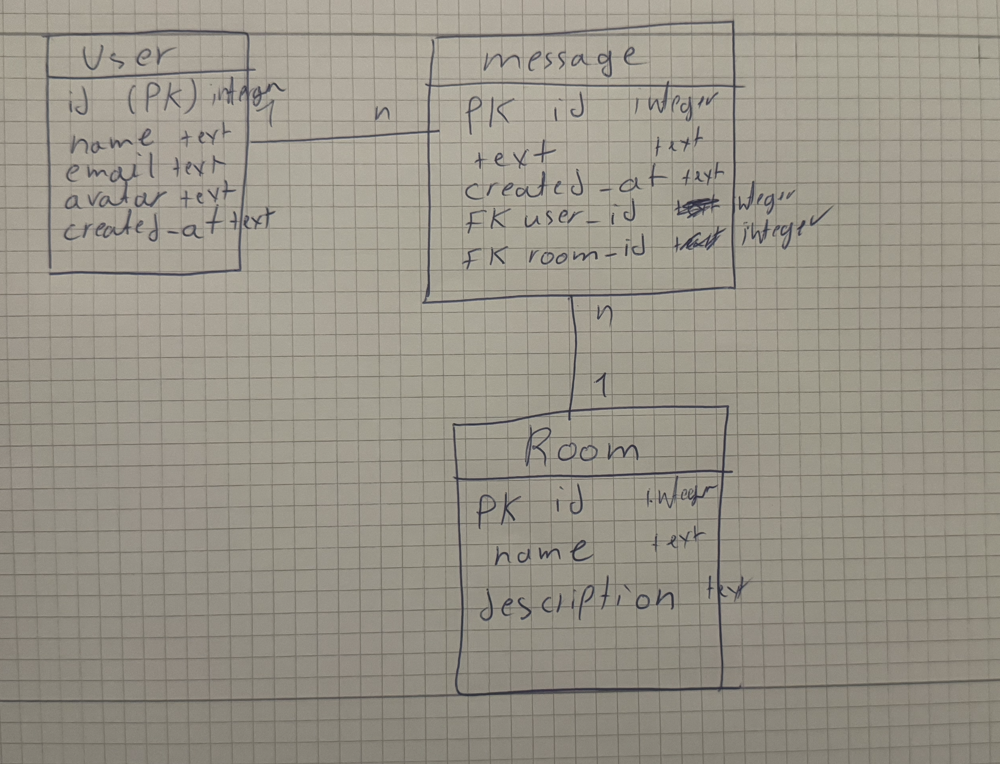

In dieser Aufgabe wurde eine kleine Chat-Datenbank umgesetzt. Das Datenmodell besteht aus folgenden Tabellen:
Ein Raum enthält viele Nachrichten, und jede Nachricht gehört genau zu einem Benutzer und einem Raum.
Das ER-Diagramm liegt in static/a05/erdiagram.png.

Der Datenbankzugriff ist gekapselt in src/sqlite.ts.
Beispiele wichtiger Funktionen:
getAllRooms()
getAllUsers()
getMessagesForRoom(roomId)Beispiele verwendeter SQL-Abfragen:
SELECT id, name FROM room ORDER BY id;
SELECT id, username, email FROM user ORDER BY id;
SELECT m.id, m.text, m.room_id, m.user_id, u.username AS author
FROM message m
JOIN user u ON u.id = m.user_id
WHERE m.room_id = ?
ORDER BY m.id;Die Testdaten werden über die Dateien data/create.sql und
data/populate.sql initialisiert. Dabei werden Benutzer, Räume,
Mitgliedschaften und Beispiel-Nachrichten erstellt.